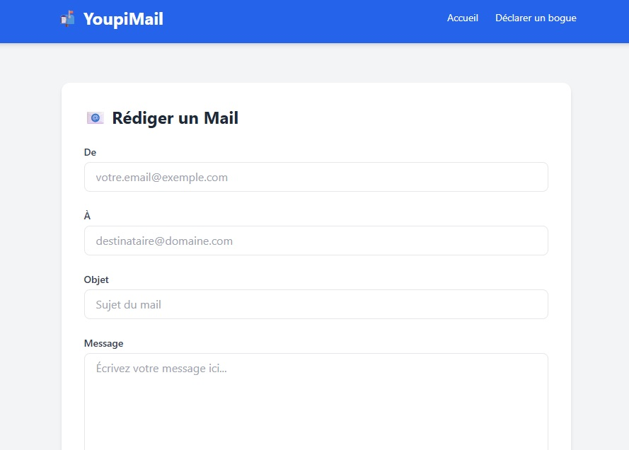

Challenge #4
Faille Doctype PUG 0-day
Petite faille IDOR mais avec une jolie injection XSS depuis un doctype sur le moteur de template PUG.
Commencez par chercher sur le site, pour trouver le mail que j'avais envoyé à l'Agence nationale
de la sécurité des systèmes d'information (ANSSI).
Ce problème n'ayant jamais été pris en considération cela en fait une faille 0-day. Il est de difficulté 3 car il n'y a aucun moyen de trouver d'information sur internet,
vous devrez analyser le code source de PUG pour voir comment est utilisé le doctype dans PUG.
Aperçu:
Pour cela vous devez avoir les connaissances suivantes :
- IDOR - Insecure direct object references
- Injection XSS Reflected
Apprentissage
Documentations et Vidéos
 Information sur la faille XSS
Information sur la faille XSS
XSS Reflected 1
XSS Reflected 2